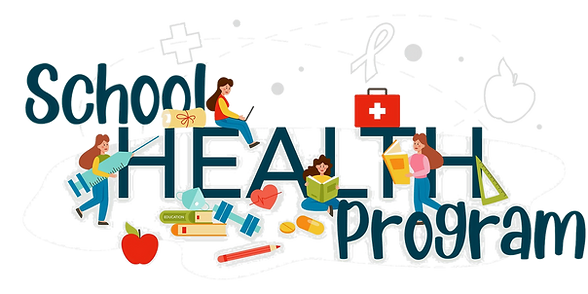

Expanded Nursing Uganda Explanation
School Health Program should be understood beyond a short definition. Link the concept to patient history, focused assessment, common risks, nursing priorities, documentation and evaluation of outcomes.
Contents — 13 sections (tap to expand)
01 **SCHOOL HEALTH PROGRAM**
School Health Program is a strategic endeavor designed to elevate the quality of life for students while fostering a culture of proactive health awareness. Its fundamental purpose is to instill a sense of responsibility towards one’s well-being among students, their families, and school staff.
The School Health Program is like a special plan that helps students, their families, and school staff learn about staying healthy. It’s not just about books and classes; it’s also about taking care of our bodies and minds. This program makes sure that students have the tools they need to learn and grow in a healthy way.
The programmes are to improve the quality of life and promote healthy seeking behavior to health positive school children; their families with staff.
02 **Core Objectives of the School Health Program**
- Promoting Health and Self-Care: The program aims to empower students with the knowledge and skills to value and maintain their own health. It encourages them to adopt healthy lifestyles and instills a lifelong commitment to well-being.
- Early Detection and Care: Timely identification of health deviations is crucial. The School Health Program strives to recognize signs of disease and abnormalities in their early stages, facilitating prompt intervention, treatment, and follow-up.
- Disease Prevention: Combating both communicable and non-communicable diseases is a priority. By imparting knowledge and promoting healthy practices, the program acts as a shield against illnesses that can hinder learning.
- Creating a Nurturing Environment: The program recognizes that a supportive environment is vital for the holistic development of students. It strives to provide a safe, nurturing space that promotes their physical, mental, social, emotional, and moral well-being.
- Optimizing Education: A healthy body and mind optimize the learning process. The School Health Program aims to help students capitalize on educational opportunities by ensuring they are in the best possible health.
- Fostering Health Consciousness: Beyond students, the program extends its impact to parents and teachers. It encourages them to embrace a health-conscious mindset, fostering the right attitudes towards health and illness.
- Empowering with Knowledge: Knowledge is a potent tool for prevention. The School Health Program empowers students and stakeholders with the essential information and skills needed for preventive health measures at various levels.
In Summary,
- Promote health and develop concern for their own health.
- Detect disease and deviation from normal heath at an early stage and arrange for promotion, treatment and follow up.
- Prevent communicable disease and non – communicable disease.
- Provide a healthy and safe environment in all rounds for development of child physical, mental, social, emotional and moral well-being.
- Help children to make the best use of educational facilities.
- Help children, their parents and teachers to be health conscious and develop the right attitude towards health and illness.
- Increase the basic knowledge and skills of children and those concerned in their welfare in all levels of prevention.
03 **Importance of School Health**
- Empowering Health Education: The school health program plays a crucial role in spreading knowledge and changing behaviors among different groups, including students, teachers, parents, and school management. It raises awareness and guides positive health choices.
- Ensuring Clean Water: The program ensures that the school’s water sources are used properly and kept clean. This is essential for maintaining a healthy environment.
- Maintaining Sanitation: A clean and safe environment is crucial for learning. The program focuses on providing proper sanitation facilities such as clean latrines, well-kept rooms, hygienic dormitories, and spaces for handwashing and sanitary disposal.
- Medical and Dental Care: The program ensures that students and staff have access to medical and dental care. Regular check-ups and health awareness campaigns are part of this effort.
- Fighting Communicable Diseases: Schools can be breeding grounds for diseases like malaria, diarrhea, HIV/STIs, skin issues, and tuberculosis. The program works to prevent and manage such health threats.
- Addressing Non-Communicable Health Issues: Apart from infectious diseases, students and staff may also face non-communicable health concerns like dental problems, mental health issues, psychological challenges, and injuries.
- Promoting Nutritional Health: Proper nutrition is vital for learning. The program ensures that both day and boarding schools offer nutritious meals, fruits, and drinks to students.
- Creating a Healthy Environment: The school health program fosters a positive psychological atmosphere. It reinforces rules against harmful practices such as smoking, alcoholism, drug abuse, unsafe sexual behaviors, and violence.
- Providing Support Services: Counseling and adolescent health services are an integral part of the program, helping students cope with various challenges they may face.
- Community Engagement: The program encourages active involvement between the school and the community. This collaboration extends to community-based primary health care activities like cleaning, protecting natural resources, improving infrastructure, and supporting immunization efforts.
04 **School health components (key elements)**
- Health Service Environmental Protection and Control Health Education
- -Early detection – Construction of toilets and waste disposal – Teaching about first aids
- – Health screening – Use of toilet – Teaching about personal hygiene
- – School child nutrition and feeding practices – Water supply – Teaching about environmental sanitation
- – Sanitation – Proper waste disposal – Sex education
- – Life skill education – Cleanliness of the compound – Nutrition education
- – Medical and dental services for schools – Extra-ordinary activities (e.g., club)
- – School psychosocial environment
- – Sexual and reproductive health
- – Treatment of minor ailments
- – Surveillance of immunization status
- – Case finding for early detection of health problems
- – Case management
- – Counseling
- – Care of pupils/students with special health needs
- – Health promotion
- – Minimum routine examination (e.g., of common eye problems and intestinal parasitosis and their Rx)
- – Simple first Aid facilities
- – Accident control (fall injury, burn injury, cut injury, traffic accident, drowning, snake bite)
Describe the school health components?
School Health Components
School health programs encompass a range of key elements aimed at promoting the well-being and overall health of students, staff, and the school community. These components are strategically designed to create a conducive environment for learning, growth, and development while addressing various health challenges. Let’s delve into the core components that constitute a comprehensive school health program:
1. Health Services:
- Health screening to detect and address potential health issues early.
- Medical and dental services to provide necessary care for students and staff.
- Treatment of minor ailments and injuries.
- Surveillance of immunization status to ensure vaccination coverage.
- Case finding for early detection of health problems.
2. Environmental Protection and Control:
- Ensuring a clean and safe school environment by constructing proper toilets and waste disposal facilities.
- Providing clean drinking water and facilities for handwashing.
- Maintaining cleanliness of the school compound.
- Monitoring the presence of stagnant water and addressing it.
3. Health Education:
- Educating students about first aid, personal hygiene, and environmental sanitation.
- Providing sex education and nutrition education.
- Promoting health awareness and responsible behaviors among students, staff, and parents.
4. Extraordinary Activities and Clubs:
- Engaging students in clubs or activities focused on health promotion and awareness.
- Encouraging students to actively participate in community-based primary health care activities.
05 Recommended School Screening Examination
The recommended school screening examination encompasses a variety of assessments to ensure the well-being of students. The components of this examination include:
Growth and Vital Signs:
- Height and Weight: These measurements are taken and recorded on a growth chart to identify cases of underweight and obesity.
- Blood Pressure: Hypertension criteria in children vary with age.
Head (Scalp) Screening:
- Lice
- Fungal Infections: Conditions like Tinea capitis (Tinea of the head) can lead to patchy hair loss, broken hairs, and scaling. Treatment with oral griseofulvin for 4-8 weeks is the recommended choice.
Vision Screening:
- Visual Acuity: Assessed using an eye chart (Snellen chart) to identify any visual impairments.
- Inflammation and Signs of Infection
Ear Examination:
- Hearing Impairment: Using the finger rub test for hearing acuity, assessment for any symptoms or signs of hearing problems.
- Presence of Earwax
- Otitis Media (Acute or Chronic Ear Infections)
Mouth Examination:
- Tonsils
- Teeth for Caries
Neck Examination:
- Lymph Nodes
- Enlargement of the Thyroid Gland
- Nodules (Masses) of the Thyroid Gland
Chest Examination:
- Auscultation of Lungs
- Presence of Exercise-Induced Asthma (Assessed by history)
- Auscultation of the Heart (Detection of Murmurs)
- Palpation of the Apical Area (Enlargement of the Heart)
Abdominal Examination:
- Palpation to Detect Occult Abdominal Problems: Enlargement of the Liver or Spleen, Tumors of the Kidney
Genitalia Examination (Males):
- Check for Undescended Testicles
- Assessment for Hernias
Screening of Spine and Extremities:
- Scoliosis: Bending the child at the waist to examine for back asymmetry
- Identification of Possible Deformities in Extremities
Skin Screening:
- Bacterial Skin Infections: Impetigo, Cellulitis, Folliculitis, Abscesses, Acne
- Fungal Infections: Tinea corporis, Tinea cruris, Tinea pedis
- Viral Conditions: Warts, Herpes Viruses
- Dermatitis (Eczema)
Assessment of Family Violence and Depressive Symptoms
- Through assessment.
06 **School Health Inspection**
Purpose and Approach: School health inspection is a critical process carried out by a team of health workers to ensure that the school environment is conducive to maintaining good health. The aim is to create a healthful and safe setting for students. Several key aspects are considered during this inspection.
Location of the School:
- The school should be situated away from unpleasant odors and excessive noise.
- It’s essential that the school is not in close proximity to markets, factories, cinema halls, bars, or restaurants.
Building Conditions:
- School buildings should be constructed with durable materials, such as bricks or stress-resistant materials, and have weatherproof roofs.
- The halls and floors must be smooth to enhance safety.
It’s vital to assess whether the school environment promotes good health. Key points of consideration include:
- Availability of clean drinking water
- Presence of sufficient and well-maintained sanitary toilets
- Facilities for handwashing
- Adequate arrangements for refuse collection and disposal
- Absence of stagnant water
- Well-ventilated and well-lit classrooms
- Comfortable seating arrangements that promote good posture
- Identification and mitigation of accident hazards, such as defective wiring or fire hazards
- Precautions against accidents, like provision of sand buckets and first aid kits
- Availability of space for breaks and play
- Suitable area for midday meals
- Preventing children from buying and consuming exposed food from hawkers near the school
- Collaborating with the school’s principal and teachers to address health hazards and improve cleanliness
- Providing shelter or shade to protect students from heat
Classroom Conditions:
- The number of classrooms should be suitable for the number of students, ideally accommodating 35-40 students per room.
- Proper lighting is crucial, with windows constituting at least 20% of the floor surface area.
- Adequate ventilation is essential for classrooms.
Furniture :
- Furniture should be simple, sturdy, and comfortable, catering to different age groups of students.
Playground:
- The school yard should be smooth and free of hazards to prevent accidents.
- Ample space is necessary for children to play and engage in school gardening activities.
Sanitation :
- The school should have proper water supply, latrines, urinals, and waste disposal systems.
- Separate latrines for male and female students, as well as teachers, should be provided, accommodating 30-50 students per facility.
Emotional Climate:
- Fostering a warm and supportive environment at school is essential for the emotional development of students.
- Reducing unnecessary tension and frustration contributes to a positive emotional climate.
07 **Implementation Strategies of School Health**
Multi-Sectoral Approach:
- Involves engaging all stakeholders in school health, regardless of their level of involvement.
- Collaboration among various entities ensures a comprehensive approach.
Integration:
- School health activities are seamlessly incorporated into the existing service delivery arrangements of organizations like the Ministry of Education and Sports (MOES), Ministry of Health (MOH), local governments, and other social services.
- Integration streamlines processes and optimizes resources.
Coordination and Networking:
- MOH and MOES collaborate to ensure cohesive school health services.
- Effective coordination and networking enhance the impact of school health programs.
Capacity Building:
- Training, operational research, infrastructure development, research mobilization, and networking efforts contribute to capacity building at all levels.
- Capacity building equips stakeholders with the skills and knowledge needed to implement effective school health initiatives.
Advocacy and Behavioral Change Communication Strategies:
- Advocacy efforts raise awareness and support for school health programs.
- Effective communication strategies drive behavioral change among students and the broader community.
School-Community Link:
- Promotes active engagement of schools in community-based primary health care activities.
- Strengthening the link between schools and communities enhances overall health outcomes.
Support Supervision, Monitoring, and Evaluation:
- Regular supervision, monitoring, and evaluation ensure the effectiveness and sustainability of school health programs.
- These processes allow for adjustments and improvements as needed.
08 **Potential Benefits from Health Services:**
Health Benefits:
- Improved health status of school children, who are future parents and leaders.
- Positive spillover effects that impact health status indicators.
Education Benefits:
- Health education becomes an integral part of school curriculum.
- Increased investment in health education contributes to overall well-being.
Social-Cultural Benefits:
- Adoption of hygienic practices, such as using sanitary facilities and safe water sources, becomes a cultural norm.
- Positive health practices cultivated through school health programs extend to both students and the community.
09 **Role of Community Nurse in School Health Program:**
- As a vital member of the school health team, the nurse participates in planning and coordinating health programs.
- The nurse serves as a school health consultant, offering expertise in health-related matters.
- Overseeing the establishment and maintenance of a safe and healthful environment within the school setting.
- Demonstrating proper techniques for teacher health inspections and related procedures.
- Assisting in screening physical, mental, and special examinations of school children.
- Contributing to communicable disease control efforts.
- Playing a pivotal role in setting up facilities and demonstrating first aid procedures.
- Conducting health programs within the school.
- Assisting in school medical examinations and follow-up procedures.
10 Nursing Uganda Clinical Lens
Use School Health Program as a practical nursing topic, not only a memorized definition. Move from individual illness to prevention, population risk, health education and continuity of care.
- What to understand first: define school health program, identify the normal or expected pattern, then explain what changes when the patient is unwell.
- Why it matters in care: the nurse must recognize risk early, explain findings clearly, document accurately and know when to escalate.
- How to revise it: connect each point to assessment, nursing diagnosis or care problem, intervention, rationale and evaluation.
11 Assessment Guide
- Who is affected, where they live, risk factors, resources and barriers to care.
- Environmental hygiene, nutrition, immunization, water, sanitation and health-seeking behaviour.
- Community beliefs, leaders, household practices and surveillance data.
12 Nursing Priorities, Rationales and Outcomes
- Promote prevention, early detection, referral and community participation.
- Use clear health education matched to literacy, culture and available resources.
- Document findings and coordinate with community health structures.
The rationale for these priorities is patient safety: nursing actions should prevent deterioration, reduce discomfort, support recovery and create clear evidence for the next caregiver.
- Expected outcome: The community understands the message, risk is reduced and follow-up or referral pathways are active.
13 Patient Teaching and Revision Check
- Explain school health program in simple language the patient or caregiver can repeat back.
- Teach warning signs, medicine or follow-up instructions, hygiene or lifestyle points where relevant.
- For exams, prepare a short answer using: definition, causes or risk factors, signs, assessment, management, complications and prevention.
- For ward practice, document baseline findings, actions taken, patient response and the plan for review.
Illustrations and Diagrams (12)



4 more diagrams available — open the lesson for full illustrations.
Related Video Lectures
Watch nursing lecture videos on YouTube for this topic. Opens in a new tab.
Watch on YouTubeExternal link: YouTube may use its own cookies and terms. Nursing Uganda is not affiliated with YouTube.